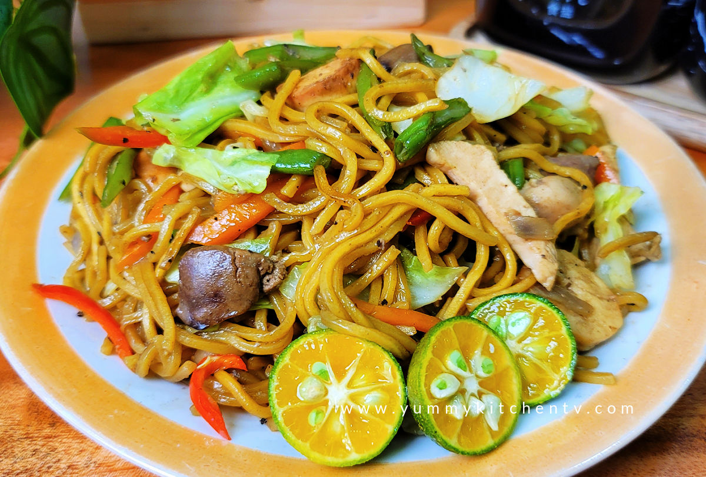

Home
Pancit Canton

Description
Pancit Canton is a popular Filipino noodle dish made with stir-fried egg noodles, vegetables, and meat or
seafood. It is commonly served during birthdays and celebrations because noodles symbolize long life and good
health.
Ingredients
- 500g pancit canton noodles
- 200g chicken breast (sliced)
- 100g shrimp (optional)
- 2 tablespoons soy sauce
- 1 tablespoon oyster sauce
- 3 cloves garlic (minced)
- 1 onion (sliced)
- 1 carrot (sliced)
- 1 cup cabbage (chopped)
- 2 tablespoons cooking oil
- 2 cups chicken broth or water
Step-by-Step Cooking Instructions
- Sauté Aromatics - Heat oil in a pan and sauté garlic and onion until fragrant.
- Cook the Meat - Add sliced chicken and cook until lightly browned.
- Add Shrimp - Add shrimp and cook for about 2 minutes.
- Add Broth and Sauce - Pour in chicken broth, soy sauce, and oyster sauce.
- Add the Noodles - Add pancit canton noodles and let them absorb the liquid.
- Add Vegetables - Add carrots and cabbage and mix well.
- Serve - Once noodles are cooked and sauce is absorbed, serve hot.